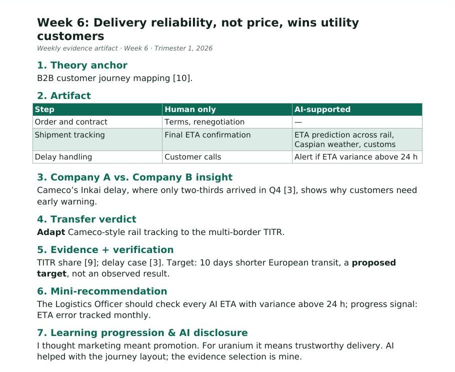

Week 6: Delivery reliability, not price, wins utility customers
1. Theory anchor
B2B customer journey mapping [10].
2. Artifact

| Step | Human only | AI-supported |
|---|---|---|
| Order and contract | Terms, renegotiation | — |
| Shipment tracking | Final ETA confirmation | ETA prediction across rail, Caspian weather, customs |
| Delay handling | Customer calls | Alert if ETA variance above 24 h |
3. Company A vs. Company B insight
Cameco’s Inkai delay, where only two-thirds arrived in Q4 [3], shows why customers need early warning.
4. Transfer verdict
Adapt Cameco-style rail tracking to the multi-border TITR.
5. Evidence + verification
TITR share [9]; delay case [3]. Target: 10 days shorter European transit, a proposed target, not an observed result.
6. Mini-recommendation
The Logistics Officer should check every AI ETA with variance above 24 h; progress signal: ETA error tracked monthly.
7. Learning progression & AI disclosure
I thought marketing meant promotion. For uranium it means trustworthy delivery. AI helped with the journey layout; the evidence selection is mine.